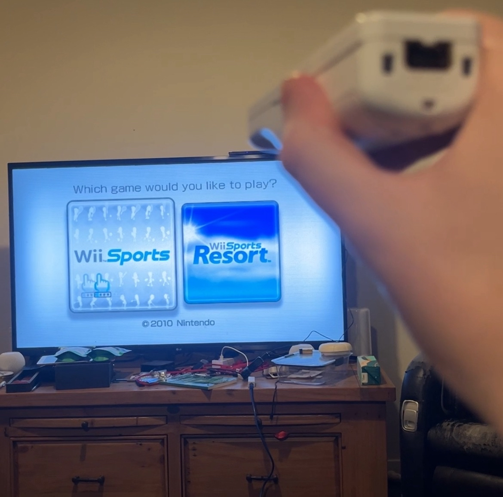

Kixxoh's blog - A collection of projects & updates.
Welcome to my blog. Subscribe and get my latest blog post in your inbox.

Casting Game Emulators Over LAN & Wiimote Intputs Via Ethernet
I have got a new home server running fedora 40 and for the first project i decided to run a game emulator service over lan and then pass through some complex controler inputs!
Read more →